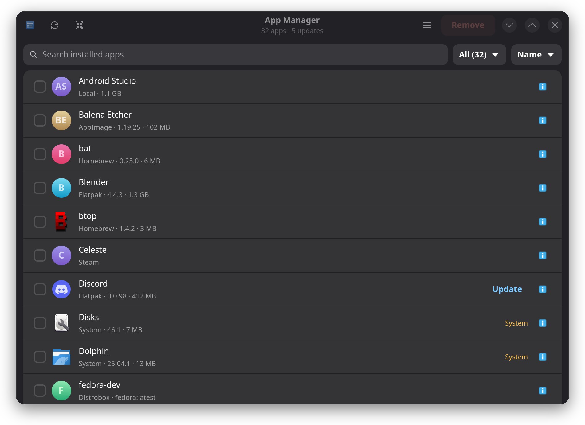
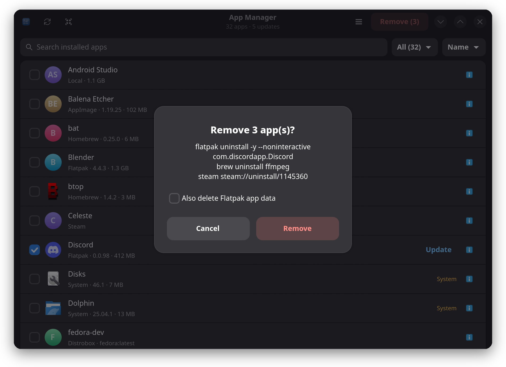
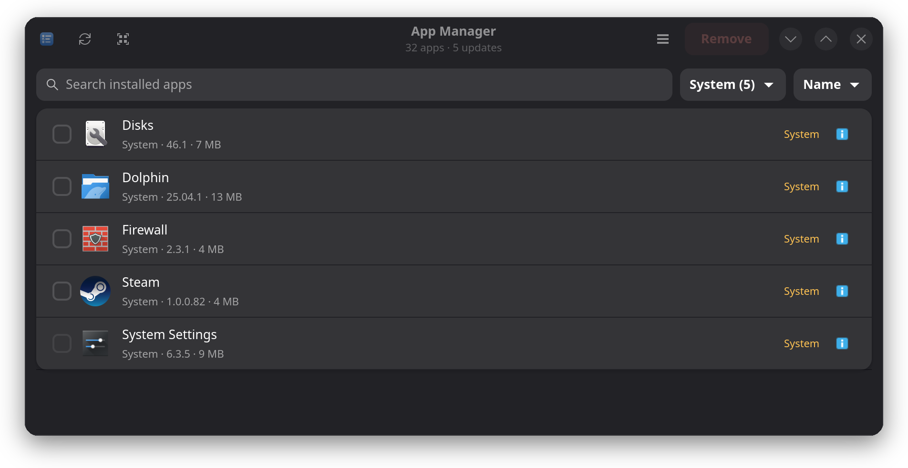
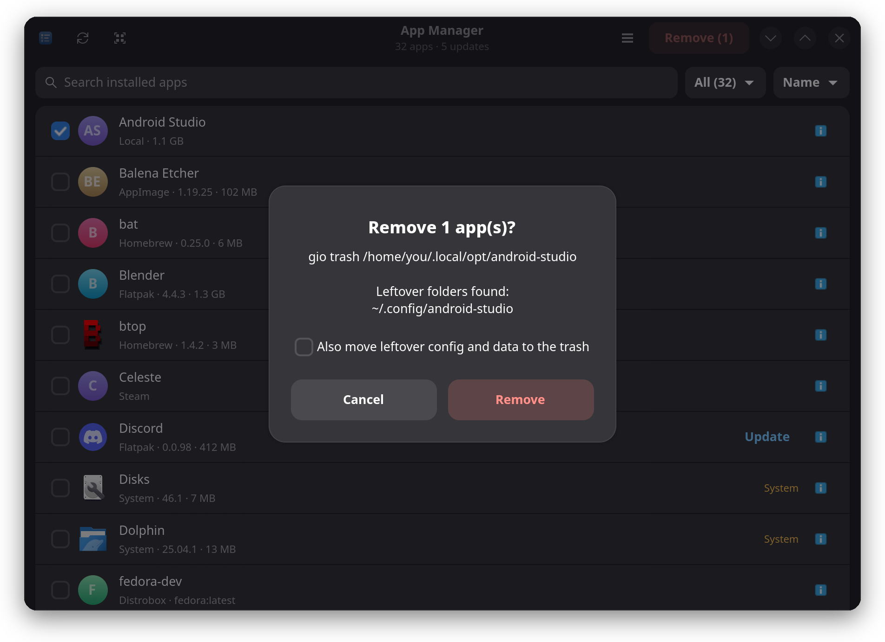

A Control-Panel-style installed apps window for any Linux distro. Flatpaks, Snaps, Homebrew, AppImages, Steam games and your distro's own packages, all searchable, with a checkbox and a Remove button.

Software comes from everywhere. App Manager finds all of it, on Fedora, Ubuntu, Debian, Arch, openSUSE and their relatives, and shows the exact command it would run to remove each one.
Remove apps and optionally their data. Update one app or all of them.
Snap apps without the runtimes and bases that come with them.
Only the formulae you installed, not dependencies, so nothing breaks by accident.
Layered packages on Bazzite, Silverblue and Kinoite.
See your containers and delete the ones you no longer use.
Finds .AppImage files and their launchers. Removal goes to the trash.
Your games and demos from the app menu, uninstalled through Steam itself.
Apps you installed by hand and web apps, cleaned up with their folder.
Your distro's own packages through apt, dnf, pacman, zypper or an rpm-ostree override.
Every removal is spelled out before it runs. Nothing happens until you confirm.
rpm-ostree override reset.

Base-image apps carry an amber System label. Core packages show a greyed-out checkbox, so the one thing you cannot undo is the one thing you cannot click.
Updates show up as a button on the row. Update one app, update everything, or let App Manager do it for you.

One Python file. Nothing to build, nothing to pip install. Needs GTK 4, libadwaita 1.5+ and PyGObject, which current Fedora, Ubuntu 24.04+, Debian 13+ and Arch ship or install in one command.
Grab the repo from GitHub.
Run the install script once.
Search "App Manager" in your launcher.